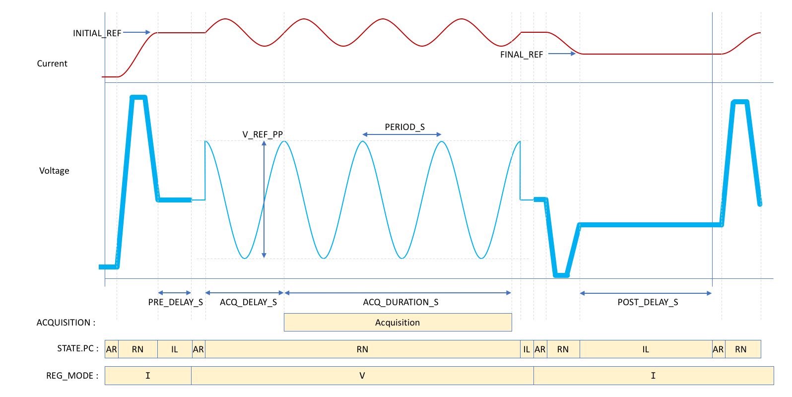

Sine-Fit¶
For converters which cannot support the large rate of change associated with the PRBS signal, the sine-fit method may be more approprioate for measuring a system frequency response. The sine-fit algorithm is based on injecting sinusoids of varying frequencies at a desired reference to obtain the magnitude and phase of a system at those specified frequencies. In general, the measurement time will increase as the number of frequency points is increased; the measurement time will be significantly longer if more frequency points are chosen. Note that the frequency vector is logarithmically spaced. The highest frequency point in the array is selected based on the sampling time of the loop (i.e., \(f_{max} = 0.1T_s^{-1}\), where \(T_s\) is the sampling time). In voltage mode (i.e., during open-loop measurements), \(T_s =\) FGC.ITER_PERIOD, and in current/field modes (i.e., during closed-loop measurements), \(T_s =\) (FGC.ITER_PERIOD) \(\times\) (REG.I.PERIOD_ITERS) or (FGC.ITER_PERIOD) \(\times\) (REG.B.PERIOD_ITERS). This means that each sinusoid injected in the system will contain at least 10 sampling points per period (where the highest frequency sinusoid will contain exactly 10 sampling points). Thus for a signal sampled at \(T_s = 100 \: \mu s\), \(f_{max} = 0.1(10000) = 1000\) Hz. The user can set the value of \(f_{min}\) and \(f_{max}\); however, the constraint \(f_{max} \leq 0.1T_s^{-1}\) must be satisfied. The user can consult Fig. 6 for setting the characteristics of the sine-fit measurement signal.
Once the experiments have been completed, a Bode plot of the measured system will automatically appear in Powerspy. The Bode plot will be saved in Fortlogs, and can be accessed at a later time (for general analysis or controller design purposes). See the API Reference to learn how to execute the PyFresco commands to initiate the data-driven controller design algorithms (for either voltage, current, and/or field control).

Fig. 6 Characteristics of the sine-fit measurement process.¶